一套权重，三种解码：把自回归、扩散与自推测统一起来的 Nemotron-Labs-Diffusion
Nemotron-Labs-Diffusion: A Tri-Mode Language Model Unifying Autoregressive, Diffusion, and Self-Speculation Decoding
GitHub star 为 2026-10-20 的快照。阅读状态、进度与收藏只保存在你的浏览器里。
逐节精读
这部分按论文的章节顺序，用本站自己的话把整篇论文从头讲一遍。读懂某个概念需要的背景知识，会在第一次用到它之前单独讲清楚（青色框）。每个结论都尽量说出“因为什么、所以什么”。标“推算”的数字是本站根据论文数据、官方 config 或官方代码算出来的，不是论文原话。本页以 arXiv v1（2026-07-07，截至 2026-10-20 唯一的版本）为底本。图号说明：PDF 版的图 1 是一张三模式示意加速度对比的总览图，arXiv 的 HTML 版没有收录这张图，所以 HTML 版的图号都比 PDF 小 1；本页一律按 PDF 编号，链接指向 HTML 版的对应位置。论文以 CC BY 4.0 许可发布，所以本页直接放了原文的 11 张图（图 9 为了减小体积由原 SVG 转成了 PNG，内容未改），其余示意图由本站绘制。每节末尾有英文原文的链接。
0 导读：这篇论文解决什么问题
自回归（AR）语言模型一次只生成一个 token，每生成一个都要把整个模型从头到尾算一遍。在只服务一两个用户的时候，这一遍计算的大部分时间并不花在乘加运算上，而是花在把几十 GB 的参数从显存搬到计算单元上，GPU 的算力大半闲着。扩散语言模型（dLLM）想利用这些闲置的算力：它一次前向同时预测很多个位置，于是可以一步写出好几个 token。但扩散模型在准确率和训练效率上一直落后于同等规模的 AR 模型，而且在实际的“速度—准确率”权衡上，也没有明显赢过给 AR 模型加多 token 预测头（MTP）、做投机解码这类成熟方法。
NVIDIA 这篇技术报告的出发点是：AR 和扩散不必二选一。只要训练时同时优化 AR 的“预测下一个 token”损失和块扩散的“把遮住的块猜回来”损失，同一套权重就可以在推理时切换三种用法。① AR 模式：普通的逐 token 生成，适合高并发的云端服务。② 扩散模式：按块并行去噪，一次前向写出多个 token。③ 自推测模式：用扩散模式一次前向起草一整块，再切回 AR 模式一次前向验证，接受和 AR 模式自己会写的一模一样的那段前缀。三种模式只差注意力掩码，参数完全相同，也共用同一份 KV 缓存的格式。
作者用这套方法从 Mistral 的 Ministral3 基座出发，继续训练出 3B、8B、14B 的基座模型、指令模型和一个 8B 视觉语言模型，全部开放了权重。主要结论有三条：第一，AR 损失和扩散损失是互补的，在扩散损失权重 \(\alpha=0.3\) 时两种模式同时最好；第二，自推测模式的每轮接受长度明显高于 EAGLE-3 和 MTP，在 GB200 上用 SGLang 服务、并发为 1 时，吞吐是本模型 AR 模式的 3.3 倍（换上定制 CUDA kernel 后 3.97 倍）；第三，一个“理想采样器”的上限分析（speed-of-light，SOL）表明，扩散模式每次前向能正确提交的 token 数还比自推测模式多 76.5%，说明并行解码还有很大的余量。
读完这部分，你应该能回答这几个问题：
- 为什么同一套权重只换注意力掩码就能在 AR、扩散、自推测之间切换？训练时那张“双流”注意力掩码是怎么让两个损失在一次前向里同时算出来的？
- 为什么作者说 AR 损失和扩散损失“互补而不是竞争”？支持这个说法的对照实验控制了什么、没控制什么？
- 线性自推测的一轮具体怎么走？为什么它每轮要两次前向，接受长度和“每次前向的 token 数”（TPF）为什么不是同一个数？
- 为什么自推测适合低并发、AR 适合高并发？论文的吞吐数字分别是在什么硬件、什么并发、什么基线下测的？
- SOL 上限是怎么算出来的，它和可以真正部署的解码器差在哪里？
- “8B 模型每次前向解码的 token 数是 Qwen3-8B 的 6 倍、吞吐 4 倍”这句话，哪些部分是严格对照、哪些不是？
1 引言：扩散模型该和 AR 竞争，还是和它合并
一个 8B 级的模型在 BF16 精度下约有 17 GB 参数（本文 8B 模型按官方 config 推算约 85 亿参数，推算）。AR 模型每生成一个 token 都要把这 17 GB 完整地从显存读一遍。如果同时只服务 1 个用户，每次前向只处理 1 个位置，读参数的时间远远超过乘加运算的时间，这种状态叫带宽受限（memory-bound）。这时有一个关键推论：让一次前向处理 16 个、32 个位置，耗时和处理 1 个位置差不多，因为参数只需要读一遍，多出来的那点运算正好填进原本闲着的算力里。
反过来，同时服务的用户越多，每次前向要处理的位置就越多（每个用户至少一个）。位置多到一定程度，乘加运算的时间超过读参数的时间，GPU 进入算力受限（compute-bound）状态。这时多处理一个位置就要多花一份实打实的计算时间，“多算几个几乎免费”就不再成立。vLLM 精读页第 1 节用批处理的例子讲过前一半，DFlash 精读页第 7 节讲过投机解码在高并发时为什么收益变小。
所以，任何“一次前向多写几个 token”的方法（扩散、投机解码、MTP），本质上都是在用闲置的算力换延迟。闲置算力多（并发低）时换得多；闲置算力少（并发高）时，多算的那些位置（尤其是最后被拒掉的）反而拖慢整体吞吐，这时老老实实用 AR 最划算。下面这个演示可以自己试：模型选 Llama-3-8B（规模与本文 8B 模型相近），GPU 选 B200（与论文用的 GB200 同属 Blackwell 一代），把 batch 从 1 往上调，看 decode 的工作点什么时候从带宽受限区跨进算力受限区。
掩码扩散：训练时随机把一部分 token 换成特殊的掩码符号 [M]，遮住的比例 \(t\) 在 0 到 1 之间随机取；模型根据剩下没被遮住的 token，把被遮住的猜回来。生成时从一整段 [M] 出发，每一步同时预测所有 [M] 位置，挑把握大的几个先填上，重复直到填满。它天生并行，但同一步里同时填上的几个 token 是各自独立选出来的，彼此“看不见”，一次填太多容易前后不通顺，所以要保质量就得多走几步，速度优势被步数吃掉（详见 MDLM、LLaDA 精读页）。
块扩散（BD3-LM）是一个折中：把序列切成长度为 \(B\) 的块，块与块之间像 AR 一样从左到右生成（前面的块可以存 KV 缓存），块内部用扩散并行填。训练时为了一次前向就训练所有块，会把“加噪的序列”和“干净的序列”拼成两倍长的输入（下面叫噪声流和干净流），用一张特制的注意力掩码让每个加噪块只能看到自己块内的其他位置和它前面那些块的干净版本（详见 Block Diffusion 精读页 §4.2）。Fast-dLLM v2、SDAR 等工作已经证明，从一个训练好的 AR 模型出发，继续用块扩散目标训练几十到几百 B token，就能得到一个不错的块扩散模型。
投机解码：先让一个便宜的草稿器猜后面 \(k\) 个 token，再让目标模型对“已确认的 token + 这 \(k\) 个猜测”做一次前向。因为注意力是因果的，目标模型在每个位置上算出的正是“假如前面的猜测都对，下一个 token 应该是什么”。贪心解码时，从第一个猜测开始逐个比对，一致就收下，遇到第一个不一致就停，并直接采用目标模型在这个位置给出的 token（它已经算好了，不额外花时间，常叫奖励 token）。所以一轮最少定稿 1 个、最多 \(k+1\) 个 token，输出和目标模型自己逐个生成的结果完全相同（详见 投机解码精读页 §2）。MTP / EAGLE-3 这类方法给目标模型挂一个很小的草稿头，草稿头逐个地猜后面几个 token（EAGLE 精读页）。
作者认为扩散模型准确率落后的一个重要原因是：标准的掩码扩散训练把所有“先写哪个位置、后写哪个位置”的顺序一视同仁，而自然语言有很强的从左到右的结构，均匀对待所有顺序等于把模型容量浪费在大量不自然的顺序上。另一方面，已有工作发现 AR 模型本身就隐含着“往前多看几步”的规划能力（论文引用的是 Apple 的 Your LLM Knows the Future，arXiv 2507.11851），扩散训练会逼着模型去推断后面的 token，正好可以把这种能力进一步激发出来。因此作者假设两种目标互相成全：AR 损失给扩散训练提供从左到右的语言先验，扩散损失反过来加强 AR 模式的“预见”能力。
基于这个假设，论文的做法是在一个统一的训练框架里联合优化两种损失，并配上两个训练技巧：全局损失平均（把一个批里所有 token 平等对待，稳住优化）和两阶段训练（先用纯 AR 目标继续训练，打牢从左到右的先验，再打开扩散损失联合训练）。训练出的模型支持三种解码模式（PDF 图 1(a)）。论文用 PDF 图 1(b)(c) 概括速度结果：在 H100 上用 PyTorch、批大小 1 时，不同模式落在不同的准确率—吞吐点上；在 GB200 上用 SGLang 时，自推测模式在低并发下的每用户吞吐远高于 AR 模式和 Qwen3-8B 配 EAGLE-3。这张总览图只在 PDF 里有，下面用一张示意图把它的核心逻辑重画出来。
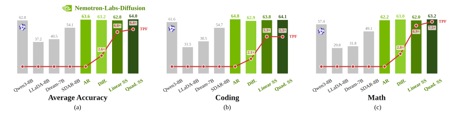
论文对三个问题的回答可以先概括如下，后面各节逐一展开。对 Q1，作者认为两种范式可以“和解”：统一训练后，AR 模式不掉点，扩散模式还能借 AR 的先验变准。对 Q2，自推测模式用扩散一次前向起草、用同一个模型的 AR 模式验证，不需要额外的草稿头，接受长度和真机速度都超过 MTP 类方法。对 Q3，SOL 分析显示，如果有一个理想的采样器，扩散模式每次前向能正确提交的 token 比自推测多 76.5%，所以扩散解码值得继续研究；而在找到这样的采样器之前，最实用的办法恰恰是让同一个模型的 AR 模式来验证扩散草稿，这正是自推测模式的由来。
2 三模式模型怎么训练：两个损失、一张掩码、三个技巧
2.1 训练目标：AR 损失 + 0.3 倍块扩散损失
AR 损失就是普通语言模型的目标：对一条序列 \(x\)，最大化从左到右逐 token 分解的似然，也就是最小化
块扩散损失沿用 BD3-LM 的写法：把序列切成 \(B\) 个连续的块 \(x^1,\dots,x^B\)，每次只对当前块 \(x^b\) 加噪，它前面的块 \(x^{<b}\) 保持干净。加噪的方式是掩码：随机取一个噪声水平 \(t\sim\mathcal U[0,1]\)，块里每个 token 以概率 \(t\) 被换成 [M]，得到加噪块 \(\tilde x^b_t\)。模型要根据加噪块和干净前缀，把被遮住的 token 猜回来：
掩码扩散的训练目标是一个变分下界（ELBO）：把“从全是 [M] 一步步还原出整句话”的过程拆开，可以证明负对数似然不超过“在各个噪声水平上，被遮住位置的交叉熵之和，再乘以 \(1/t\) 的权重”的期望。直观的理由是：遮住比例为 \(t\) 时，被遮住的 token 大约有 \(t\) 乘以块长那么多，\(1/t\) 把不同噪声水平上的损失拉回到同一个量级，使得整体恰好是一个似然的上界。它带来的副作用是：\(t\) 很小时，被遮住的 token 很少，但每个都乘了一个很大的权重，这会让损失的数值在不同样本之间波动很大，后面的“全局损失平均”就是为了对付这一点（推导见 MDLM 精读页）。
两种损失加权相加：
为什么扩散损失只给 0.3 的权重？作者的解释是扩散损失的数值通常比 AR 损失大得多，把 \(\alpha\) 取到让两项“量级对齐”时效果最好。从原文图 4 可以读出，训练后期 AR 损失约 0.73，扩散损失约 2.3，乘上 0.3 后约 0.69，两项确实差不多大（读图推算）。这样做的效果是：扩散的梯度只是在 AR 的基础上补充“看得更远”的能力，而不会喧宾夺主、冲掉 AR 已经学好的东西。所有训练阶段都用 \(\alpha=0.3\)。
两阶段训练。第一阶段令 \(\alpha=0\)，也就是只用 AR 损失继续训练，先把模型的表示牢牢锚定在语言从左到右的结构上；第二阶段再把 \(\alpha\) 调到 0.3，打开扩散监督。作者的说法是，这样扩散的梯度是在“补充”而不是“覆盖”AR 的先验。在正式的模型里，第一阶段是 1T token 的纯 AR 继续训练，第二阶段是 300B token 的联合训练（第 5 节）。
全局损失平均。这一点看起来是工程细节，但作者把它列为关键技巧之一。问题出在“一个批里怎么把逐 token 的损失平均成一个数”。设一个批有 \(N\) 条序列，第 \(n\) 条序列里参与损失的 token 有 \(L_n\) 个，每个的损失是 \(\ell_{n,i}\)（扩散部分已乘上 \(1/t\)）。一种做法是先在每条序列内部平均、再在序列之间平均（序列平均）；另一种是把整个批里的所有 token 一视同仁地平均（全局平均）：
如果每条序列参与损失的 token 数相同，两种做法完全一样。但扩散训练里，每条序列的噪声水平 \(t\) 是各自随机取的，被遮住的 token 数大约正比于 \(t\)，所以 \(L_n\) 差别很大。下面用一个小例子看差别在哪。
作者把这个现象类比为强化学习里 GRPO（按序列平均）和 DAPO（按 token 平均）的差别：聚合方式不同，训练稳定性就不同。官方代码里也能看到这一点：前向返回的是“损失总和”和“参与损失的 token 总数”（扩散部分为被遮住的 token 数，AR 部分为序列长度），由外部按全局 token 数统一相除。
2.2 注意力掩码：双流输入，干净流改成严格因果
要在一次前向里同时算出两个损失，论文沿用 BD3-LM 的双流输入：把同一条序列的加噪版本和干净版本首尾拼接，长度变成原来的两倍，再用一张结构化的注意力掩码规定谁能看谁。
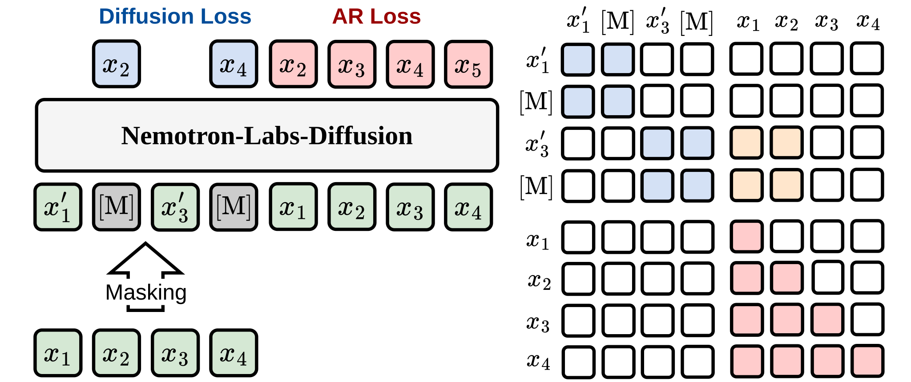
噪声流到噪声流、噪声流到干净流这两部分，和标准的块扩散设计一样。关键的不同在干净流到干净流那一块。BD3-LM、Fast-dLLM v2 以及作者此前的 Efficient-DLM 都让干净流也按块注意：块内双向、块间因果。这在只算扩散损失时没有问题，因为干净流只是给噪声流提供上下文（KV）。但如果想在干净流上顺便算 AR 损失，就出事了：块内双向意味着第 \(i\) 个位置能直接看到第 \(i+1\) 个 token，“预测下一个 token”就变成了抄答案，这叫标签泄漏。本文把干净流改成严格因果（这个做法来自 Meta 的 Set Block Decoding 和 Apple 的 Your LLM Knows the Future），每个位置只能看自己和左边，于是干净流的输出可以直接拿来算一个没有泄漏的 AR 损失，扩散损失和 AR 损失在同一次前向、同一次反向里一起算完。
这个改动还有一个推理时的好处，论文没有专门强调，但从官方代码看得很清楚：既然训练时干净前缀永远是用因果注意力编码的，那么推理时不管用哪种模式，已经写好的前缀的 KV 缓存都可以用因果注意力来算，和普通 AR 模型的 KV 缓存完全是一回事。扩散模式在噪声块上用双向注意力，但它读的前缀 KV 和 AR 模式读的是同一份。这就是三种模式能共用一份 KV 缓存、只需切换掩码的根本原因。
与已有工作的关系。作者明确说这张掩码沿用了 Set Block Decoding（Meta，arXiv 2509.04185），那篇工作也做了扩散与 AR 的联合训练。本文自认为的新东西有三块：一是三模式推理，特别是自推测解码，以及为提高并行度而做的后训练增强（第 3 节的采样器和 LoRA 草稿器）；二是开发完整模型族的整套训练流程（第 5 节）；三是围绕“扩散模型的真实潜力”做的系统性实验和 SOL 分析（第 2.3、2.4、4 节）。
2.3 消融：每个训练技巧各贡献了多少
作者从官方的 Ministral3-8B 基座出发，用 25B token 继续训练，把各个技巧一个个叠加上去，全部在扩散模式下评测 6 个代码与数学基准（HumanEval、HumanEval+、MBPP、MBPP+、GSM8K、Minerva Math）。
逐项来看：
- 块注意力基线（54.23）：按 Efficient-DLM 和 SDAR 的设置，干净流按块注意、只算扩散损失，这已经是一个能用的扩散模型。
- 全局损失平均（+2.12）：原因见 2.1 节，降低了因掩码比例不同带来的梯度方差。
- 各数据并行进程用不同的掩码比例（+0.71）：数据并行训练时，每张卡各自处理一部分样本。官方代码里，打开这个选项后每个进程用“随机种子 + 进程编号”生成自己的噪声水平；论文没有写不打开时是什么情况，按代码的写法推测，不打开时各进程可能抽到相同的噪声水平（推测）。让各进程的 \(t\) 互不相同，相当于让一个全局批里的噪声水平更分散，同样是在降低方差。
- 两阶段训练（+5.74）：起点换成“先用 AR 目标继续训练了 1T token”的模型。作者的解释是，AR 初始化越强，模型“预见后文”的能力越好，从 AR 转成扩散也越容易。代码类任务受益最明显，HumanEval 从 45.12 升到 58.54。
- 加上 AR 损失（+7.48，单项最大）：MBPP 从 53.00 升到 65.60，Minerva Math 从 55.84 升到 66.44。这是全文核心论点的主要证据：在扩散训练时保留 AR 目标，能把模型锚定在语言上通顺的生成轨迹上。
- “两阶段训练”一行的 +5.74 不是同等计算量下的比较：它的起点比其他行多训练了 1T token（是这一行 25B 联合训练的 40 倍，推算）。所以它说明的是“更强的 AR 起点有用”，而不是“两阶段这个流程本身”在同样预算下更好。
- “加上 AR 损失”必须先把干净流改成严格因果（2.2 节），所以这一行很可能同时改了掩码和损失两件事（推测，论文只说这是两者的关键区别）。
- 每一行都是单次训练、单次评测，没有误差范围。HumanEval 只有 164 道题，一道题约 0.6 分（推算），所以 1 分以内的差别（例如 +0.71）不宜过度解读。
- 表 1 的最后一行（70.28）和表 2 中 \(\alpha=0.3\) 的扩散模式（69.77）看起来是同一个设置，分数却差 0.5，论文没有解释，可能是解码设置或训练细节不同。
2.4 两个损失是互相帮忙，还是在抢容量
如果 AR 和扩散在争夺模型容量，那么加大扩散权重应该让扩散模式变好、AR 模式变差，反之亦然，最优点会落在两个极端。作者用两组实验检验这一点。
第一组：扫描 \(\alpha\)。在两阶段训练的基础上，同样用 25B token 继续训练，\(\alpha\) 取 0.1、0.2、0.3、0.5、1.0，两种模式分别评测：
| \(\alpha\) | 0.1 | 0.2 | 0.3 | 0.5 | 1.0 |
|---|---|---|---|---|---|
| 扩散模式 6 项平均 | 68.20 | 68.62 | 69.77 | 68.78 | 66.93 |
| AR 模式 6 项平均 | 68.71 | 70.50 | 70.62 | 68.96 | 67.22 |
两种模式都在 \(\alpha=0.3\) 时最好，而且在 0.1 到 0.5 之间，两条曲线同涨同落，没有出现“一个变好、另一个变差”的情况。作者据此认为两种目标是互补的，存在一个两者都满意的“甜点”。
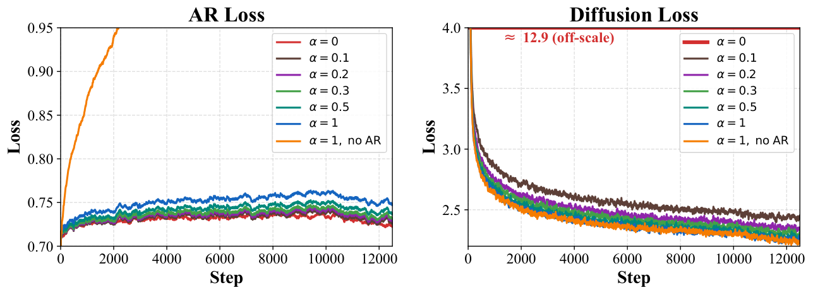
第二组：扩散损失会不会伤害 AR 能力。在完全相同的 token 数下，比较“只用 AR 损失”和“AR + 0.3 倍扩散损失”训练出的模型的 AR 模式准确率，分基座（25B token 继续训练，10 项）和指令（再加 45B token 的 SFT，10 项）两种设置：
- 基座：72.50 对 72.64（+0.14）；指令：63.18 对 63.61（+0.43）。平均分基本持平或略升。作者的解读是，适当地融入扩散训练能增强 AR 模式“预测未来”的能力，类似 DeepSeek-V3 报告里 MTP 训练目标对主模型的帮助（DeepSeek-V3 精读页）。
- 逐项看，指令模型在代码和数学上有升有降：LiveCodeBench-CPP +4.24、MBPP +1.59、AIME25 从 26.67 到 33.33；但 IFEval −3.01、HumanEval −2.44、AIME24 从 36.67 到 33.33。作者认为扩散目标对严格的指令遵循略有影响。
两组实验合起来，作者的结论是：联合训练不是零和博弈，扩散损失以几乎可以忽略的 AR 准确率代价，换来了并行解码的能力；两个目标共享同一个最优工作点。
- 两组实验的差距都很小。AIME 每套只有 30 道题，一道题就是 3.33 分；AR 损失的 \(\alpha\) 扫描里，0.2 与 0.3 的 AR 平均分只差 0.12。没有多次运行的误差范围时，“两种模式都在 0.3 处达到峰值”更稳妥的读法是“0.2 到 0.3 一带都不错，1.0 明显变差”。
- “相同 token 数”不等于“相同计算量”。加了扩散损失的那一组用的是双流输入，每条样本的序列长度翻倍，注意力和前馈的计算量大约也翻倍（推算）。所以“扩散损失不伤 AR”是在 token 预算相同、计算量更多的条件下成立的。
- 表 3 里指令模型“+ 扩散损失”那一行的 10 个分数，与表 5 里本文 8B 指令模型 AR 模式的分数逐项完全相同，说明这一行很可能就是最终发布的模型（推断）；与之对照的“只用 AR 损失”模型没有单独说明它的基座是怎么训的。
3 三种推理模式（含附录 A–C）：同一套权重怎么用
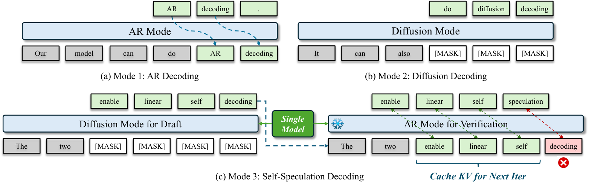
3.1 模式一：AR 解码
三模式模型完整保留了标准的从左到右生成：第 \(i\) 步在因果注意力下从 \(p_\theta(\cdot\mid x_{<i})\) 采样 \(x_i\)。它和一个普通的 AR 模型没有任何区别，可以直接放进现有的推理引擎和流水线。作者建议在高并发服务时用这个模式，原因见第 1 节的背景框：并发高时 GPU 已经算力受限，任何“多算几个位置”的做法都不再免费。
3.2 模式二：块扩散去噪，以及一个训练出来的采样器
基于置信度的采样。扩散模式沿用 Fast-dLLM 和 Fast-dLLM v2 的做法，一块一块地生成。对当前块，先把所有位置初始化为 [M]，然后反复做前向：每一步模型对所有 [M] 位置给出预测，把置信度（最大概率）超过阈值的位置一起提交；一个都不超过时，至少提交置信度最高的那一个。块填满后刷新这一块的 KV 缓存，再进入下一块。阈值越低，每步提交得越多、越快，但出错的风险也越大（阈值规则的来历见 Fast-dLLM 精读页 §4）。
modeling_nemotron_labs_diffusion.py 的 generate）里，刷新是对刚写完的这一块做一次因果注意力（AR 模式）前向：一方面把这一块的 KV 以 AR 的方式写进缓存，另一方面用这一块最后一个位置的 AR 输出，直接决定下一块的第一个 token，下一块只有剩下的位置从 [M] 开始去噪。这次刷新前向也计入了函数返回的前向次数（NFE）。官方评测脚本 evaluate.py 的扩散模式默认块长 8、阈值 0.9；模型卡里的对话示例用块长 32、阈值 0.9。
训练一个采样器。固定阈值是一个“隐式”的信号：模型训练时从来没有被要求让置信度和“对不对”对齐，所以置信度高不一定就对，置信度低也不一定就错。作者因此训练了一个轻量的分类器：对当前块里每一个仍是 [M] 的位置，预测“模型此刻给出的 top-1 是否正确”。这里“正确”的定义很具体：如果改用最保守的解码方式，也就是每步只提交置信度最高的那一个位置、一步一步把这一块写完，这个位置最终会被写成的 token，就是“正确答案”；当前 top-1 等于它，就算对。推理时，分类器给出的概率超过某个阈值的位置才提交，调这个阈值就能在 TPF 和每个 token 的出错率之间取舍。作者把它看作在学习第 4 节 SOL 分析里的“贪心接受”判据。
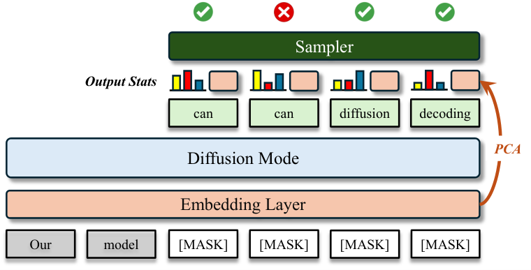
附录 A 给出了采样器的细节：
- 结构。一个 4 层的小 Transformer，隐藏维度 384，在当前块内双向注意，最后每个位置接一个线性层和 sigmoid。参数约 4.8M，相对 8B 骨干只占约 0.06%，挂在冻结的骨干之上。
- 输入特征。每个位置一个 144 维向量：top-3 预测的语义嵌入（经 PCA 压缩），以及输出分布的统计量，例如 top-1 概率、top-1 与 top-2 的差距（margin）、top-3 概率之和、熵。作者发现最有用的特征是模型自己 top-1 预测的语义嵌入。
- 为什么要跨位置注意。如果把采样器换成逐位置独立的 MLP，“准确率—TPF”曲线下的面积会掉 10 个百分点。原因是能不能同时提交，不只取决于每个位置自己有多确定，还取决于这几个位置放在一起是否相容；图 10 里两个相邻位置都想写“can”就是这种情况，必须看着彼此才能发现。
- 训练数据。用 8B 模型在 Nemotron-Post-Training-Dataset-v2 的数学、代码、STEM 和对话子集上跑出约 2000 万条去噪轨迹，块长取 8 和 32。轨迹用两种策略生成：(i) 标准的置信度解码，每步只提交 1 个；(ii) 混合策略，先提交那些“模型 top-1 已经等于真实答案”的位置，剩下的再按置信度来。每条轨迹的每个中间步骤都记录 144 维特征和二元标签“当前 top-1 是否等于这个位置最终被提交的 token”，用逐位置的二元交叉熵训练，以留出轨迹上的 AUC 做早停。
采样器的效果在第 6.1 节（原文图 8）：同样准确率下 TPF 约为原来的 1.3 倍，或同样 TPF 下准确率高 10.6 分。
3.3 模式三：线性自推测，以及给草稿路径挂一个 LoRA
一轮怎么走。线性自推测把起草和验证拆成两次前向。设已验证的前缀是 \([x_1,\dots,x_n]\)，推测宽度为 \(k\)。
- 用扩散起草。在前缀后面接 \(k\) 个 [M]，组成 \([x_1,\dots,x_n,m_1,\dots,m_k]\)，用扩散通路（块内双向注意）一次前向把 \(k\) 个位置同时填上，得到草稿 \(\hat x_{n+1},\dots,\hat x_{n+k}\)。
- 用 AR 验证。再对草稿做一次因果注意力的前向，同样复用前缀的 KV 缓存。AR 在每个位置给出下一个 token 的预测 \(x^{\text{AR}}_{n+j}\)。从第一个草稿开始比对，接受满足验证条件（例如 \(x^{\text{AR}}_{n+j}=\hat x_{n+j}\)）的最长前缀，提交到已验证前缀里。和标准投机解码一样，第一个被拒位置上 AR 的预测本身就是一个已验证的 token，所以每轮产出 1 到 \(k+1\) 个 token。
用原文图 5(c) 的例子走一遍：前缀“The two”，起草得到“enable / linear / self / decoding”；AR 验证给出的预测依次是“enable / linear / self / speculation”。前三个一致，收下；第四个不一致，停下，并采用 AR 的“speculation”。这一轮花了 2 次前向，定稿 4 个 token。
linear_spec_generate 整理。每轮前向次数计 2，产出 1 到 32 个 token；这里的“块长 32”就是表 10 里的“草稿长度 31”。因为验证前向用的是因果注意力、截断后只留下被接受位置的 KV，缓存始终和纯 AR 生成时一模一样，所以不存在扩散模型常见的“近似 KV 缓存”问题。代码只支持批大小 1。为什么要挂 LoRA。扩散模式起草时，它心里的“正确答案”是扩散模式自己的判断，而验证用的是 AR 模式的判断，两者并不总是一致。草稿和验证器越不一致，接受长度就越短。作者于是在扩散草稿通路上额外训练一个 LoRA 适配器，专门让草稿去贴合 AR 验证器，AR 通路保持不变（验证时把 LoRA 关掉）。LoRA 只加在注意力模块的输出投影 \(o_{\text{proj}}\) 上，秩 128、缩放系数 \(\alpha=512\)，约 36M 可训练参数，约占骨干的 0.4%（按 8B 的 config 推算：34 层 × 2 × 4096 × 128 ≈ 35.7M，吻合）。
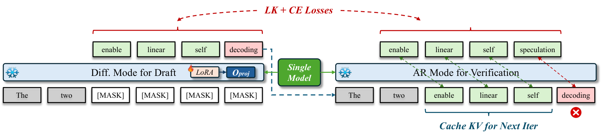
LoRA 的训练目标由两部分组成，作者写得很细，这里按顺序讲清楚。
① 草稿和验证器各自的分布。对草稿块里的第 \(j\) 个位置，挂了 LoRA 的草稿器给出 logits \(z^d_j\)，冻结的 AR 验证器在同样的上下文上给出 \(z^t_j\)，各自除以温度 \(\tau=3\) 后做 softmax，得到 \(q_j\) 和 \(p_j\)。\(p_j\) 当作固定的目标（不回传梯度），只有 \(q_j\) 通过 LoRA 参数接收梯度。温度取 3 是为了把分布摊平，让非最大概率的那些 token 也能提供梯度信号。
② 只在“已接受 + 1”的位置上算损失。设第一个不一致的位置是 \(j^*\)。如果这一块有被拒的位置，参与损失的集合是 \(\{1,\dots,j^*\}\)，否则是整块 \(\{1,\dots,k\}\)；其余位置既不进分子也不进分母。理由是：推理时验证器的 KV 缓存会在被拒的地方截断重建，\(j^*\) 之后那些位置的验证 logits 是以一段“部署时根本不会出现”的续写为条件算出来的；拿它们来训练，等于让草稿器去贴合一个反事实的分布，会把它带偏。
③ LK-hybrid 分布匹配项。这一项来自 LK losses（arXiv 2602.23881），本文把它改到截断的支撑集上。先取 \(p_j\) 和 \(q_j\) 各自概率最大的 \(K=200\) 个 token 的并集 \(\mathcal U_j\)（最多 400 个），把两个分布在并集之外置零、重新归一化，得到 \(\tilde p_j,\tilde q_j\)。截断的原因是全词表上的 KL 散度在 \(q\) 有零概率而 \(p\) 不为零的地方会变成无穷大。每个位置的损失是 KL 与总变差（TV）的自适应混合：
这里的关键是：总变差恰好等于 \(1-\alpha_j\)，其中 \(\alpha_j=\sum_v\min(\tilde p_j(v),\tilde q_j(v))\) 正是标准投机采样里“从 \(q\) 采样的草稿被 \(p\) 接受”的概率（推导见 投机解码精读页 §3.2）。所以最小化 TV 就是直接最大化接受率。权重 \(\lambda_j\) 随 \(\alpha_j\) 自动变化（\(\mathrm{sg}\) 表示不回传梯度）：训练初期草稿和验证器差得远，\(\alpha_j\approx0\)、\(\lambda_j\approx1\)，损失基本是 KL，它给出的梯度更强，能把分布整体拉近；训练后期 \(\alpha_j\to1\)，\(\lambda_j\to e^{-0.5}\approx0.61\)，TV 的比重升到约四成，直接去缩小接受率的缺口。
④ 交叉熵项。LK 项匹配的是整个 top-K 分布。作者另外在每个参与损失的位置上，以验证器的 argmax \(y_j\) 为目标，在同一个并集支撑上算一个交叉熵（这里温度取 1），相当于一个很强的“照着验证器最想写的那个 token 去写”的信号。如果 \(y_j\) 不在并集里（\(K=200\) 时少于 2%），这一项记为 0，并且这个位置也不计入交叉熵的分母，避免偶尔的截断失误把损失撑爆。两项在每个草稿块的有效位置上分别取平均，再在批内平均，以 1:1 相加：\(\mathcal L=\mathcal L_{\mathrm{LK}}+\mathcal L_{\mathrm{CE}}\)。
⑤ 训练时草稿也要采样。一个批里 90% 的样本，草稿 token 按温度 1 从 \(q\) 中采样，其余 10% 用贪心。这样草稿器见过的输出分布更广，推理时如果验证器也按温度采样，适配器依然稳健。
LoRA 的效果在第 6.1 节（表 6）：TPF 在 3B / 8B / 14B 上分别相对提高 14.4% / 32.5% / 27.6%，而准确率不变。准确率不变是意料之中的：贪心验证时，最终输出永远是 AR 模式自己的选择，LoRA 只影响“猜对了多少”，不影响“写出来的是什么”。
linear_spec_lora/ 下，推理时可选加载。3.4 变体：二次自推测，一次前向同时验证和起草（附录 C）
线性自推测每轮要两次前向，起草和验证是串行的。二次自推测借用 Apple《Your LLM Knows the Future》提出的二次解码（quadratic decoding），流程与 NVIDIA 的 TiDAR 相同（TiDAR 精读页），把起草和验证塞进同一次前向。代价是要“为最坏情况做准备”：既然不知道这一轮会在第几个位置被拒，就提前为每一种可能的接受位置都准备好下一轮的草稿。
具体地，第 \(t+1\) 步的输入是：已验证前缀 \([x_1,\dots,x_n]\)，加上这一步刚由 AR 确定的 \(x_{n+1}\)，再加上上一步留下的 \(k\) 个推测 token，每个推测 token 后面各接 \(k\) 个新的 [M]：
插入的 [M] 一共 \(k^2\) 个，这就是“二次”的由来。用一张结构化的注意力掩码做一次前向，会同时得到两类输出：一是推测 token 上的因果预测，用来逐个验证上一步的草稿，接受最长的一致前缀；二是每组 [M] 上的扩散预测，作为下一步的草稿。因为每个推测 token 后面都挂着自己的一组 [M]，不管验证在哪里中断，中断点那一组的扩散预测都可以直接当下一轮的 \(k\) 个草稿，所以每一步总有 \(k\) 个新草稿可验。
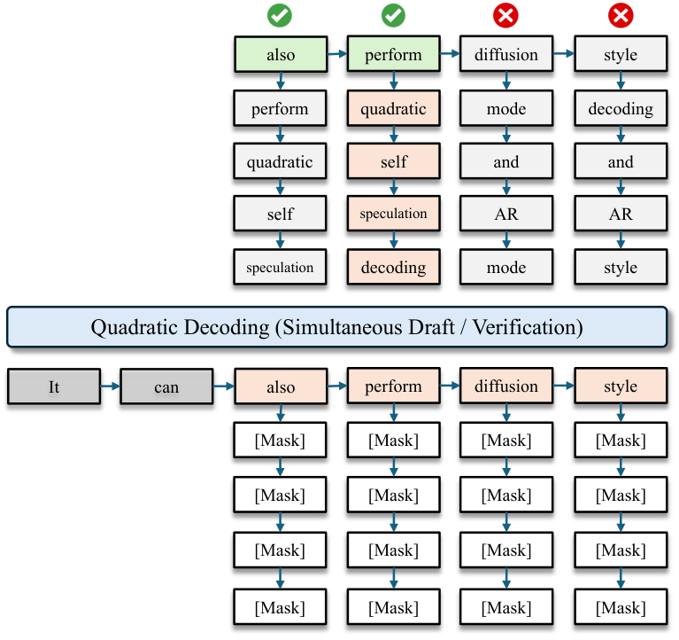
AR 与扩散的集成验证器。除了只用 AR 预测做验证，三模式模型还能提供第二个验证信号。论文的做法是：对每个推测 token \(x^t_{n+j}\)，取紧跟在它后面的第一个 [M] 位置 \(m_1\) 上的扩散预测，作为对同一个 token 的另一种验证分布；AR 验证器则用这个位置上的因果预测。两种分布加权混合，就得到集成验证器：
按 Eq. 11 的布局推算，一次前向要处理的新位置数是 \(1+k(1+k)\)：\(k=4\) 时 21 个，\(k=16\) 时 273 个（推算）。在低并发时这些位置大多落在“几乎免费”的区间，所以二次自推测的 TPF 最高（表 5 里 6.38）。但作者用 FlexAttention 实现这张特殊掩码，内核没有专门优化，真机速度反而不如线性自推测，所以默认用线性版本。
3.5 把几种模式放在一起：每次前向写几个 token，该怎么数
后面所有的速度数字都建立在“每次前向解码多少个 token”（TPF）上，但不同模式一次前向做的事情不一样，数法也就不一样。下面用一个示意的时间轴把它们并排放在一起。
| 1 | 2 | 3 | 4 | 5 | 6 | 7 | 8 | 合计 | |
| AR | 1 | 1 | 1 | 1 | 1 | 1 | 1 | 1 | 8 个，TPF 1 |
| 扩散（块长 8） | 3 | 3 | 2 | 刷 | 4 | 4 | 刷 | 16 个 / 7 次，TPF 2.3 | |
| 线性自推测 | 草 | 4 | 草 | 6 | 草 | 1 | 草 | 5 | 16 个；每轮接受 4，TPF 2 |
| 二次自推测 | 4 | 6 | 1 | 5 | 4 | 6 | 1 | 5 | 32 个，TPF 4（每次处理的位置多得多） |
论文第 4 节明确区分了两个量：接受率（这里指每个“接受步”定稿多少 token；对线性自推测，一个接受步就是一轮“起草 + 验证”）和真实 TPF（平均每次前向定稿多少 token）。线性自推测每轮两次前向，所以真实 TPF 是接受率的一半：在 SPEED-Bench 上，LoRA 版的接受率为 6.82，真实 TPF 为 3.41。
那么表 5、表 6 里线性自推测的“TPF 5.99”是哪一种？论文在第 6 节没有说明。本站核对了官方仓库的评测脚本：evaluate.py 计算的 TPF 是“生成的 token 总数 ÷ 前向总次数”，而 linear_spec_generate 每轮把起草和验证各记 1 次前向（外加开头 1 次预填充）。仓库 README 给出的 GSM8K 示例输出是准确率 93.78%、TPF 5.89，与表 5、表 6 里 8B 指令模型 GSM8K 的数字完全一致。按这个口径，5.99 已经是“每次前向”的数，对应每轮平均接受约 12 个 token；按 README 示例的平均生成长度 302 和平均前向 52.1 次推算，GSM8K 上约 25.6 轮、每轮约 11.8 个 token（推算）。这比 SPEED-Bench 上的 6.82 高得多，差别主要来自数据：表 5 的 10 个基准以数学、代码、推理为主，输出长而格式规整，SPEED-Bench 则包含角色扮演、写作、问答等更难猜的类别（第 4 节、第 6.5 节）。
英文原文 §3 ↗ · 原文图 5（HTML 版图 4）↗ · 附录 A ↗ · 附录 B ↗ · 附录 C ↗ · 官方仓库 ↗
4 Speed-of-light 分析：扩散模式的并行度上限有多高
这是性能工程里的一个说法，指“在给定条件下理论上能达到的最快速度”，就像光速是物理世界里速度的天花板。比如 GPU 性能分析工具会报告一个 kernel 达到了硬件峰值带宽或峰值算力的百分之多少。本文借用这个词，指在“结果必须和某个参考输出完全一致”的约束下，扩散模式每次前向最多能提交多少个 token。它不是一个可以部署的方法，而是一把尺子：用来量现有采样器还剩多少余量。
SOL 分析完全在扩散模式内部进行，不涉及 AR 验证器，所以它衡量的是扩散模型自身的并行解码能力。和线性自推测相比，扩散模式有一个结构上的优势：线性自推测只能接受草稿的一段连续前缀，第一个被拒的位置之后全部作废；扩散模式每一步可以提交当前块里任意一个子集的位置。
4.1 怎么构造这个上限
先定一个参考答案：串行去噪。对长度为 \(B\) 的一块，从全是 [M] 的输入出发，每一步在所有 [M] 位置、所有词表项里找出概率峰值最高的那一个，把它的 argmax 写到这个位置上，然后用新的输入重新算一遍；重复 \(B\) 次，一次只写一个，直到写满。这样得到的序列 \(\mathbf t=(t_1,\dots,t_B)\) 是模型在“完全不并行”时会收敛到的答案。SOL 接受率的定义是：从同一个全 [M] 输入出发，用某种并行方案一字不差地复现 \(\mathbf t\)，平均每次前向提交多少个 token。
最简单的并行方案：贪心接受。每一次迭代，模型对所有位置给出 argmax 预测，凡是“还是 [M]、并且预测等于 \(\mathbf t\) 在该位置的值”的位置全部提交；一个都没有时，退而提交置信度最高的一个。\(K\) 次迭代写满一块，TPF 就是 \(B/K\)。它快，但不保证复现：一次提交好几个彼此相关的 token，会改变剩余位置的条件分布，后面的预测可能因此偏离 \(\mathbf t\)，退而求其次提交的那个位置也可能是错的。
递归动态压缩：保证复现的搜索。为了每一块都精确复现 \(\mathbf t\)，作者把贪心接受换成一次搜索：在每次迭代里，把所有“预测与目标一致”的 \(N\) 个位置按置信度从高到低排成 \(p_1,\dots,p_N\)，然后寻找最长的前缀 \(\{p_1,\dots,p_k\}\)，使得提交它之后，继续解码剩下的位置仍然能到达 \(\mathbf t\)，这叫“安全”。判断安全的方法是往下模拟：用低一层的解码器（贪心接受）把剩下的部分解完，看结果是否等于 \(\mathbf t\)；每块的模拟预算是 5000 次前向，超了就当作不安全，用二分法缩短前缀。因为只提交置信度最高的那一个位置，和串行去噪的一步没有区别，所以它一定安全，每次迭代至少前进一个位置。这个方案的 TPF 在贪心能精确复现时不低于贪心，还能救回贪心失败的情形。第 4 节报告的 SOL 都用这个方案，贪心只作为一个快速的下界参考。
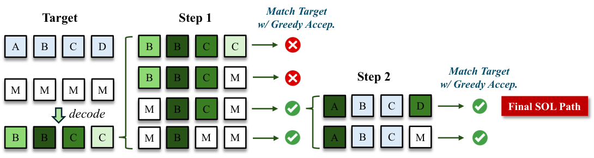
4.2 在 SPEED-Bench 上的结果
作者在 SPEED-Bench（2026 年发布的一套投机解码评测集，arXiv 2604.09557）的 11 个类别、共 713 条样本上，对 8B 指令模型的扩散模式跑递归动态压缩，块长取 4、8、16、32。表 4 同时给出了各个块长下扩散模式在 10 个指令基准上的平均准确率。
| 类别 | 块长 32 | 16 | 8 | 4 |
|---|---|---|---|---|
| 多语种 | 11.26 | 8.08 | 5.46 | 3.37 |
| 代码 | 10.24 | 7.50 | 5.32 | 3.32 |
| 数学 | 9.30 | 7.02 | 4.90 | 3.20 |
| STEM | 8.01 | 5.68 | 4.11 | 2.98 |
| RAG | 7.32 | 5.67 | 4.14 | 2.91 |
| 推理 | 7.22 | 5.06 | 3.87 | 2.79 |
| 人文 | 6.93 | 5.00 | 3.76 | 2.76 |
| 写作 | 6.13 | 4.71 | 3.58 | 2.62 |
| 摘要 | 6.02 | 4.48 | 3.25 | 2.71 |
| 问答 | 5.63 | 4.43 | 3.46 | 2.61 |
| 角色扮演 | 3.49 | 2.76 | 2.41 | 2.00 |
| SOL 接受率（全体） | 7.60 | 5.68 | 4.17 | 2.89 |
| 10 个基准的平均准确率 | 61.81 | 63.18 | 65.43 | 64.04 |
原文表 4，类别按块长 32 时的数值从高到低重新排序。
从这张表可以读出四点：
- 并行度很高，而且随块长近似线性增长。块长 32 时平均每步能安全提交 7.60 个 token，多语种和代码超过 10 个；块长从 4 到 32，SOL 从 2.89 涨到 7.60。
- 现有的置信度采样离上限很远。块长 32 时，置信度阈值采样在相近准确率下只有约 3 的 TPF（第 6.1 节的图 8：读图约为 TPF 2.9 时平均准确率 61.8，和表 4 里块长 32 的 61.81 对得上），与 7.60 的上限差了一倍多。这说明还有很大余量留给更好的采样器。
- 类别之间差 3.2 倍。从角色扮演的 3.49 到多语种的 11.26。作者推测这反映了 token 级的熵：模板化、格式固定的内容里，很多位置看一部分上下文就能确定；开放式的生成则不然。如果这个推测成立，能根据内容类型自适应的采样器就能利用这种差异。
- 块长越大并行度越高，但准确率不是。块长 8 时准确率最高（65.43），块长 32 时最低（61.81）。准确率和并行度之间存在权衡，所以作者认为“在大块长下保住准确率”是一个关键的研究方向。
SOL 与线性自推测的对比（块长 32）。这里要分清两个量。接受率：每个接受步提交多少 token。SOL 在一次扩散前向里提交多个位置；线性自推测每轮“起草 + 验证”最多接受 \(k\) 个草稿。真实 TPF：平均每次前向提交多少 token。SOL 除了每个接受步一次前向，每块只多一次刷新 KV 的前向，所以真实 TPF 接近接受率；线性自推测每轮两次前向，真实 TPF 是接受率的一半。两者对齐的“正确答案”也不同：SOL 对齐扩散模式自己的串行去噪结果，线性自推测对齐 AR 模式的结果。作者认为既然两种模式的准确率相当，两个参照都可以算“正确”，这个比较是公平的。
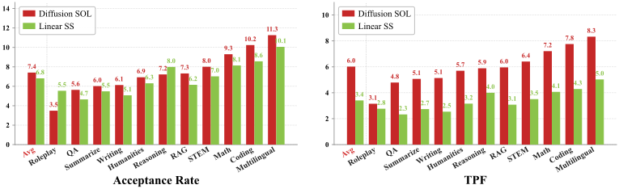
论文的结论是：接受率上，线性自推测的 6.82 比 SOL 的 7.60 低约 10.3%，各类别的差距也都不大，说明在扩散起草之上加 AR 验证，是一种逼近 SOL 的有效办法；但真实 TPF 上，SOL 是 6.02，线性自推测是 3.41，前者高 76.5%。差距来自两个原因：一是验证要多花一次前向；二是线性自推测只能接受连续前缀，第一个被拒位置之后那些其实很有把握的 token 都被扔掉了。
由此作者得出两点启示：第一，只要有一个优化过的采样器能缩小置信度采样与 SOL 之间的差距，扩散模式就是实现高度并行解码的一条有前途的路；第二，AR 验证是从扩散草稿中采样的有效方式，而且能逼近 SOL，但它多出来的验证开销和“只能接受前缀”的模式，从根本上把它的真实 TPF 压在 SOL 之下，哪怕草稿和验证器已经对齐得很好。
- SOL 是一个“开卷”的上限，不是可以部署的解码器。它需要先把参考答案 \(\mathbf t\) 串行地算出来（一块 \(B\) 次前向），再用最多 5000 次模拟前向去搜索安全的提交集合。现实中的采样器既不知道 \(\mathbf t\)，也付不起这些搜索的代价。“扩散比自推测多 76.5%”比较的是一个理想上限和一个实际方法。
- 两者复现的不是同一个答案。SOL 复现的是扩散模式的串行结果，块长 32 时它在 10 个基准上的平均准确率是 61.81；线性自推测复现的是 AR 模式的结果，平均 63.61（表 5）。前者的“正确答案”本身就低约 1.8 分。
- 两个平均值的算法可能不同。原文图 7 自己标的 SOL 平均接受率是 7.4，这正好是表 4 中 11 个类别的简单平均（推算 7.41）；正文和表 4 写的 7.60 则可能是按样本加权的平均（推测，论文没有说明）。线性自推测的 6.82 恰好等于表 10 中 11 个类别的简单平均（推算）。如果两边都按类别简单平均，接受率的差距约为 8% 而不是 10.3%（推算）。这不影响结论的方向，但说明这些百分比的精度有限。
5 Nemotron-Labs-Diffusion 模型族：基座、指令与视觉语言模型
WSD 是 warmup–stable–decay 的缩写（论文引用 MiniCPM）：先用很短的时间把学习率从零升上去（预热），然后在一个固定值上保持大部分训练时间（稳定），最后在一小段时间里快速降下来（衰减）。和余弦调度相比，它的好处是“稳定段”可以随时延长或从中途分叉，不需要事先定好总步数，适合这种在已有模型上继续训练的场景。
5.1 基座模型
为了省预训练的成本，作者直接从 Mistral 发布的 Ministral3 基座模型出发（论文引用 Ministral 3 技术报告，arXiv 2601.08584），套用第 2 节的两阶段训练：第一阶段纯 AR 继续训练 1T token，第二阶段 AR 与扩散联合训练 300B token（\(\alpha=0.3\)）。预训练数据沿用 NVIDIA Nemotron Nano 2 技术报告中的数据集。初始学习率 \(1\times10^{-5}\)，按 WSD 降到 \(3\times10^{-6}\)，AdamW，权重衰减 0.1，全局批 512 条、序列长 4096，在 256 张 H100 上训练。按这些数字推算，每步约 2.1M token，1.3T token 约合 62 万步（推算）。训练和推理流水线通过 NVIDIA 的 Megatron Bridge 发布（对应的 PR #3105 已于 2026-05-15 合并）。论文没有分别列出 3B、8B、14B 各自的训练量，看起来三个规模用的是同一套配方。
从官方 config 看，8B 模型的结构就是 Ministral3-8B：34 层、隐藏维度 4096、32 个查询头与 8 个 KV 头（分组查询注意力）、词表 131,072，用 YaRN 把原生 16,384 的上下文扩到 262,144；输入嵌入和输出层不共享权重，合计约 85 亿参数（推算）。论文本身没有给出这些结构细节。
5.2 指令模型
指令模型在基座上做监督微调（SFT），整个 SFT 过程仍然用 \(\alpha=0.3\) 的联合目标。初始学习率 \(2.5\times10^{-6}\)，按 WSD 降到 \(2.5\times10^{-7}\)，AdamW，权重衰减 0.1；数据是 NVIDIA Nemotron 3 Super 的 SFT 数据集中的 45B token，全局批 256 条、序列长 16k，同样在 256 张 H100 上训练。和 LLaDA 的做法一样，SFT 时提示部分一个 token 都不遮，损失只在回答部分上算（LLaDA 精读页 §2.3）。
5.3 视觉语言模型
结构与初始化。在扩散语言骨干上加一个视觉编码器和一个两层 MLP 投影层（带 2×2 的 patch 合并，即把相邻 4 个图像 patch 合成一个 token），训练和推理流程与纯文本模型共用，只是多了视觉前端。语言骨干和输出层取自 8B 指令模型，带着联合训练学到的“扩散感知”表示；视觉编码器和投影层取自同一家族的 AR 视觉语言模型 Ministral3-8B-Instruct-2512，带着训练好的视觉感知和跨模态对齐能力。因为两边的语言模型结构完全相同，拼接是精确的，没有参数对不上或需要插值的地方，也没有引入新参数。拼好之后，用和纯文本指令模型相同的联合目标，在 FineVision 多模态指令数据上对整个模型（骨干、视觉编码器、投影层）继续 SFT。
非对称双流。直接套用双流训练，会把所有 token 都复制一份放进噪声流，包括图像 token。但图像 token 从来不会被遮住，只有回答部分的文字才会被加噪，所以噪声流里的图像 token 只增加计算量，对扩散损失毫无贡献；图像分辨率高时，这部分开销很可观。作者的办法是把噪声流里的图像位置全部删掉：
其中 \(N_{\text{vis}}\) 是图像 token 数。干净流保留完整序列（包括图像 token），所以 AR 目标和噪声流读取的上下文都不缺视觉信息。总长度从 \(2L\) 变成 \(L_{\text{text}}+L\)。举个例子：一张图 1024 个 token、文字 1024 个 token，原来双流长 4096，现在 3072，短了四分之一（推算）；图像 token 占比越高，省得越多。
6 实验：准确率、并行度与真机吞吐
6.1 8B 指令模型
对照与评测。AR 对照是 Qwen3-8B、Qwen2.5-7B 和 Ministral3-8B-Instruct-2512；扩散对照是 LLaDA-8B Instruct、Dream-7B Instruct 和 SDAR-8B Chat。本文模型的四种模式全部评测，线性自推测默认用 LoRA 版。所有模型都在非思考模式下评测。10 个基准分三类：科学问答与指令遵循（GPQA、IFEval、MMLU），代码（HumanEval、MBPP、LiveCodeBench-CPP），数学（Math500、GSM8K、AIME24、AIME25）。AR 对照和本文模型都用 NVIDIA 的 NeMo-Skills 评测框架，扩散对照用各自论文提供的官方评测管线。本文扩散模式和 SDAR 通过调去噪阈值报告 TPF。
| 基准 | Qwen2.5-7B | Qwen3-8B | Ministral3-8B | LLaDA-8B | Dream-7B | SDAR-8B | SDAR-8B | 本文 AR | 本文 扩散 | 本文 线性 SS | 本文 二次 SS |
|---|---|---|---|---|---|---|---|---|---|---|---|
| GPQA | 37.12 | 49.24 | 42.87 | 33.30 | 33.00 | 40.20 | 30.80 | 44.44 | 43.94 | 40.40 | 44.30 |
| IFEval | 74.58 | 87.38 | 64.31 | 59.90 | 62.50 | 61.40 | 60.07 | 68.65 | 68.32 | 69.13 | 71.00 |
| MMLU | 74.86 | 76.66 | 73.90 | 65.50 | 67.00 | 78.60 | 78.83 | 79.85 | 78.71 | 79.01 | 79.95 |
| HumanEval | 77.44 | 81.71 | 71.04 | 49.40 | 55.50 | 78.70 | 79.27 | 80.49 | 78.66 | 81.71 | 79.27 |
| MBPP | 81.55 | 81.88 | 78.97 | 41.00 | 58.80 | 72.00 | 67.32 | 85.19 | 83.86 | 84.92 | 85.19 |
| LCB-CPP | 12.33 | 21.09 | 20.76 | 4.19 | 1.25 | 13.44 | 11.89 | 28.85 | 26.16 | 24.89 | 27.70 |
| Math500 | 75.10 | 84.80 | 83.60 | 39.20 | 43.00 | 78.60 | 72.40 | 88.00 | 85.80 | 87.60 | 88.80 |
| GSM8K | 91.89 | 92.42 | 92.42 | 79.91 | 81.00 | 91.30 | 88.48 | 94.01 | 93.03 | 93.78 | 94.16 |
| AIME24 | 13.75 | 30.21 | 27.71 | 0.00 | 0.00 | 16.67 | 13.33 | 33.33 | 46.67 | 36.67 | 33.33 |
| AIME25 | 6.88 | 22.08 | 24.58 | 0.00 | 3.33 | 10.00 | 3.33 | 33.33 | 26.67 | 30.00 | 36.67 |
| 平均 | 54.55 | 62.75 | 58.02 | 37.24 | 40.54 | 54.09 | 50.57 | 63.61 | 63.18 | 62.81 | 64.04 |
| TPF | 1.00 | 1.00 | 1.00 | 1.00 | 1.00 | 1.00 | 1.75 | 1.00 | 2.57 | 5.99 | 6.38 |
原文表 5。前三列是 AR 模型，中间四列是扩散模型（SDAR-8B Chat 给了两个阈值），后四列是本文 8B 指令模型的四种模式。
作者的四点观察：
- AR 模式平均 63.61，比 Qwen3-8B 高 0.86，也高于其他所有 AR 对照。作者认为这说明联合训练保住了 AR 的准确率，并引第 2.4 节的受控实验作为旁证。
- 扩散模式在 TPF 2.57 时平均 63.18，比 Qwen3-8B 高 0.43，比 SDAR-8B Chat 高 9.09；作者还指出它在更高的并行度下能更好地保住准确率（PDF 图 1(b)）。
- LoRA 版线性自推测的准确率与扩散模式相当（62.81），TPF 升到 5.99，说明用轻量的 LoRA 让扩散草稿对齐 AR 验证器是有效的。
- 二次自推测的 TPF 最高（6.38），因为它为所有可能的接受位置都准备了下一块。但它的特殊掩码用 FlexAttention 实现，内核优化不足，真机效率不如线性自推测，所以默认用线性版本。
作者据此总结三模式设计的部署价值：AR 模式的准确率不低于最好的同规模 AR 模型，可以不改任何流水线、直接替换现有的 AR 模型；扩散模式只需调阈值，就能让一个模型覆盖一整条“准确率—吞吐”权衡曲线；自推测模式放弃了扩散模式“可以接受非连续位置”的灵活性，换来一个可靠的草稿验证机制，从而带来可观的真机加速（第 6.5 节）。
采样器的效果。在块长 32 的指令模型上，扫描不同的去噪阈值，画出 10 个任务平均准确率与 TPF 的关系：
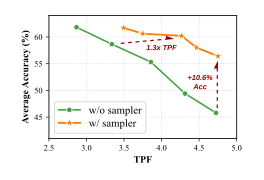
作者认为，这个简单的设计已经能带来这么大的提升，说明第 4 节里“实际 TPF 与 SOL 上限之间的差距”有一部分可以通过直接学习“接受策略”本身来缩小。
LoRA 对线性自推测的作用（表 6）。
| 规模 | 不加 LoRA：平均 TPF | 加 LoRA：平均 TPF | 相对提升 | 平均准确率（不加 / 加） |
|---|---|---|---|---|
| 3B | 3.81 | 4.36 | +14.4% | 55.00 / 55.00 |
| 8B | 4.52 | 5.99 | +32.5% | 62.88 / 62.81 |
| 14B | 4.67 | 5.96 | +27.6% | 66.35 / 66.36 |
两点结论：第一，即使不加 LoRA，线性自推测已经有不小的 TPF（14B 为 4.67），而且模型越大 TPF 大体越高；第二，加 LoRA 在三个规模上都稳定提高 TPF，准确率不变。按任务看，8B 加 LoRA 后 TPF 最低的是 MMLU（4.08）和 MBPP（4.44），最高的是 AIME24（7.44）和 Math500（7.36），数学类任务最容易猜。作者另外说明，各种自推测设置与 AR 模式之间那一点点准确率差，来自“一次解码 1 个 token”和“一次预填充多个 token”时 GPU 内核的数值差异。
6.2 扩展到 3B 与 14B
同样的评测协议，用于 3B 和 14B 模型，对照是相应规模的开源 AR 指令模型（原文表 7，下面只列平均值）：
| 3B 档 | 平均准确率 | 平均 TPF | 14B 档 | 平均准确率 | 平均 TPF |
|---|---|---|---|---|---|
| Llama-3.2-3B-Instruct | 39.90 | 1.00 | Gemma-3-12B-IT | 58.03 | 1.00 |
| Phi-4-mini-Instruct | 49.20 | 1.00 | Phi-3-Medium-14B | 49.34 | 1.00 |
| Ministral3-3B-Instruct-2512 | 47.97 | 1.00 | Phi-4-14B | 60.82 | 1.00 |
| Qwen3-4B | 53.23 | 1.00 | Ministral3-14B-Instruct-2512 | 62.97 | 1.00 |
| Qwen3-14B | 65.17 | 1.00 | |||
| 本文 3B · AR | 55.50 | 1.00 | 本文 14B · AR | 67.46 | 1.00 |
| 本文 3B · 扩散 | 52.90 | 1.91 | 本文 14B · 扩散 | 66.51 | 2.74 |
| 本文 3B · 线性 SS | 55.00 | 4.36 | 本文 14B · 线性 SS | 66.36 | 5.96 |
| 本文 3B · 二次 SS | 55.80 | 5.42 | 本文 14B · 二次 SS | 68.15 | 6.92 |
用 LoRA 版线性自推测时，3B 和 14B 比最强的对照 Qwen3-4B、Qwen3-14B 分别高 1.77 和 1.19 分，TPF 分别为 4.36 和 5.96。作者还观察到，模型越大越容易解锁并行解码的能力，扩散模式的 TPF 从 3B 的 1.91、8B 的 2.57 涨到 14B 的 2.74，线性自推测从 3B 的 4.36 涨到 14B 的 5.96；他们把这归因于大模型更强的“预见未来”能力，草稿更可靠。
6.3 8B 基座模型
基座模型与 AR 基座（Llama-3.1-8B、Ministral3-8B、Qwen3-8B）以及扩散基座（LLaDA-8B、Dream-7B）比较，12 个任务覆盖代码（HumanEval、HumanEval+、MBPP、MBPP+）、数学（GSM8K、Minerva Math）、知识（MMLU）和常识推理（ARC-E、ARC-C、HellaSwag、PIQA、Winogrande）。平均分：Llama-3.1-8B 57.04，Ministral3-8B 66.75，Qwen3-8B 71.58，LLaDA-8B 54.92，Dream-7B 65.30；本文 AR 模式 71.89，扩散模式 72.13（TPF 2.06），线性自推测 72.36（TPF 4.67），二次自推测 72.10（TPF 7.04）。也就是说，AR 模式比 Ministral3-8B / Qwen3-8B 高 5.14 / 0.31；扩散模式比 LLaDA-8B / Dream-7B 高 17.21 / 6.83；两种自推测在 TPF 4.67 和 7.04 时，平均分都比最强的 Qwen3-8B 高 0.5 分以上。
6.4 视觉语言模型
VLM 在两类基准上评测：短答案（AI2D、ChartQA、DocVQA、MMMU、MathVista、RealWorldQA；表中另有 MMMU-Pro 的 10 选项版）和需要长链推理的 MMMU-Pro-V（CoT）。对照是已有的扩散 VLM：MMaDA、LaViDa、Dimple、LLaDA-V-8B。全部用 VLMEvalKit，提示词和后处理与 AR 基线（Ministral3 VLM）相同。扩散模式的去噪阈值 \(\tau=0.9\)。
| 模型 · 模式 | 8 项平均 | TPF |
|---|---|---|
| MMaDA · 扩散 | 28.0 | 1 |
| LaViDa · 扩散 | 46.9 | 1 |
| Dimple · 扩散 | 44.3 | 1 |
| LLaDA-V-8B · 扩散 | 58.2 | 1 |
| 本文 VLM-8B · AR | 59.5 | 1 |
| 本文 VLM-8B · 扩散 | 57.9 | 全部样本 2.46；输出超过 100 token 2.80；超过 200 token 3.15 |
| 本文 VLM-8B · 线性 SS | 59.4 | 全部样本 3.63；超过 100 token 6.03；超过 200 token 7.45 |
原文表 9 的平均值与 TPF。
AR 模式比最强的扩散 VLM（LLaDA-V-8B）平均高 1.3 分；扩散模式在 TPF 2.46–3.15 时保持了有竞争力的准确率；线性自推测只比 AR 模式低 0.1 分，TPF 却达到 3.63–7.45，回答超过 200 token 时最高。作者据此认为，联合训练框架可以顺利推广到视觉语言场景，而且在需要较长推理的任务上优势最明显。原因不难理解：短答案（比如 DocVQA 的答案往往只有几个词）本身就写不满一轮草稿，TPF 自然上不去。
6.5 推理效率：真机吞吐、并发与 EAGLE-3
在低并发部署里，MTP 类方法（以 EAGLE-3 为代表）已经是默认选择：一个很小的草稿模型逐个猜后面几个 token，大模型一次前向验证并接受其中一部分。它在低并发时划算，是因为“逐 token 生成一次”和“验证一次”的显存读取成本差不多，而验证一次能收下好几个 token。论文指出它有两个瓶颈：其一，草稿模型容量有限，猜得稍远就不可靠；其二，草稿是递归生成的，草稿模型再小，每一步也要付嵌入层和输出层（LM head）的成本。以 Qwen3-8B 为例，词表约 15.2 万、隐藏维度 4096，输出层本身就有约 6.2 亿参数（推算），每猜一个 token 都要读一遍。三模式模型的优势则是：接受长度显著更高，而且起草是 token 并行的（一次前向填满一整块），GPU 利用率更好。EAGLE 系列的细节见 EAGLE 精读页。
实验设置。8B 模型部署在 SGLang 服务端，在 NVIDIA GB200、RTX Pro 6000 和 DGX Spark 三种硬件、不同并发下测量，对照是 Qwen3-8B 配 EAGLE-3。评测数据是 SPEED-Bench 的数学、代码、推理、多语种四个类别，生成长度限制在 1024 token 以内，作者说是为了避免重复和幻觉。EAGLE-3 的超参数做了网格搜索，本文模型只调块长。另外还给出第 4 节 SOL 的吞吐估算，作为现有自推测基础设施的参考上限。
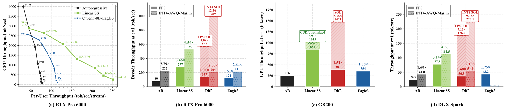
论文的三点观察：
- 线性自推测在三种 GPU 上都显著提高每用户吞吐。GB200 上最高是 AR 模式的 3.3 倍（用优化过的 kernel 时 3.97 倍、1015 token/s）；RTX Pro 6000 上并发 1 时 FP8 / INT4 量化下分别为 277 / 525 token/s（相对同精度的 AR 为 3.46 / 2.35 倍）；DGX Spark 上为 77.5 / 112.5 token/s（3.14 / 2.69 倍）。作者称它是一个“即插即用”的低并发加速方案。
- 比 EAGLE-3 更快。并发 1 时，线性自推测在 GB200 / RTX Pro 6000 / DGX Spark 上分别是 EAGLE-3 的 2.4 / 2.3 / 1.8 倍，而且在图 9(a) 的整条“系统—每用户”权衡曲线上都优于 EAGLE-3。作者把原因归于更高的接受长度。
- SOL 显示还有很大余量。RTX Pro 6000 上，按 SOL 估算的吞吐在 FP8 / INT4 下是 AR 的 7.09 / 12.36 倍，大约是线性自推测的 2 倍。
为什么并发一高，优势就消失。图 9(a) 很直观地说明了第 1 节的背景。并发 1 时，线性自推测每次前向处理 32 或 64 个位置，仍远在带宽受限区，多算的位置几乎免费，所以每用户吞吐是 AR 的三倍多。并发升到 64 时，每次前向要处理 64 个请求乘以块长那么多位置，GPU 已经进入算力受限区，被拒的草稿位置开始实打实地占用算力；作者把块长一路调小到 8，也只能和 AR 打平。再往上，AR 模式每次前向只处理 128 个位置，还能把系统吞吐推到约 4,000 token/s。这就是论文“高并发用 AR、低并发用自推测”的依据，也是“一个模型、按并发切换模式”的实际意义。
每个类别的接受长度（表 10）。草稿长度都取 31，比较本文 8B 模型的原生线性自推测（不加 LoRA）、LoRA 版，以及 Qwen3-8B 的 EAGLE-3 和一个 9B 的 MTP 模型：
| 类别 | 本文 · 原生 | 本文 · LoRA | EAGLE-3 | MTP |
|---|---|---|---|---|
| 多语种 | 7.96 | 10.06 | 1.91 | 4.47 |
| 代码 | 6.61 | 8.57 | 3.14 | 5.97 |
| 数学 | 6.24 | 8.14 | 2.79 | 4.80 |
| 推理 | 6.18 | 7.99 | 3.40 | 3.68 |
| STEM | 5.55 | 7.02 | 2.92 | 4.45 |
| 人文 | 5.01 | 6.31 | 3.12 | 3.76 |
| RAG | 5.07 | 6.15 | 3.06 | 4.75 |
| 角色扮演 | 4.66 | 5.54 | 2.10 | 2.32 |
| 摘要 | 4.47 | 5.48 | 2.66 | 3.69 |
| 写作 | 4.28 | 5.07 | 2.81 | 3.21 |
| 问答 | 4.01 | 4.65 | 2.63 | 3.50 |
| 11 类平均 | 5.46 | 6.82 | 2.75 | 4.24 |
| 4 类平均（代码、数学、推理、多语种） | 6.75 | 8.69 | 2.81 | 4.73 |
原文表 10，类别按 LoRA 列从高到低重新排序。MTP 一列原文写作“Qwen3-9B-MTP”；Qwen3 系列没有 9B 的型号，可能指自带 MTP 头的 Qwen3.5-9B（推测，论文没有说明）。
本文模型在所有类别上的接受长度都明显高于 EAGLE-3 和 MTP：平均 5.46 / 6.82 对 2.75 / 4.24；在作者称为“对扩散友好”的四个类别上，差距进一步拉大到 6.75 / 8.69 对 2.81 / 4.73。作者的解读是，扩散起草给出的多 token 提案更可靠，尤其是在有强句法或语义约束的结构化任务上。
把吞吐倍数的分子分母对齐。上面的倍数用了好几个不同的基线，下面把它们放在一张表里（数字来自原文图 9 与 §6.5，倍数为分子 ÷ 分母）：
| 说法 | 硬件 / 精度 | 并发 | 分子（token/s） | 分母（token/s） | 倍数 |
|---|---|---|---|---|---|
| 摘要的“4 倍吞吐” | GB200 | 1 | 线性 SS + 定制 CUDA kernel 1015 | 本模型 AR 模式 256 | 3.97 |
| 正文的“3.3 倍” | GB200 | 1 | 线性 SS 851 | 本模型 AR 模式 256 | 3.32 |
| 对 EAGLE-3 的“2.4 倍” | GB200 | 1 | 线性 SS 851 | Qwen3-8B + EAGLE-3 354 | 2.40 |
| RTX Pro 6000，FP8 | RTX Pro 6000 / FP8 | 1 | 线性 SS 277 | AR FP8 80 | 3.46 |
| RTX Pro 6000，INT4 | RTX Pro 6000 / INT4 | 1 | 线性 SS 525 | AR INT4 223 | 2.35（图上标 6.56，分母换成了 AR FP8） |
| RTX Pro 6000 的 SOL | FP8 / INT4 | 1 | 估算 567 / 989 | AR FP8 80 | 7.09 / 12.36 |
| DGX Spark | FP8 / INT4 | 1 | 线性 SS 77.5 / 112.5 | AR 24.7 / 41.8 | 3.14 / 2.69 |
| 对 EAGLE-3（另两种 GPU） | RTX Pro 6000 / DGX Spark，FP8 | 1 | 277 / 77.5 | 121 / 43.2 | 2.3 / 1.8 |
这张表说明两件事。第一，论文里 AR 模式的对照是“本模型自己的 AR 模式，在同一个 SGLang 实现里跑”，这对衡量“自推测带来多少加速”是公平的；但摘要把它写成“比 Qwen3-8B 吞吐高 4 倍”，而图 9 里并没有 Qwen3-8B 不带 EAGLE-3 的吞吐。第二，INT4 的 SOL 倍数（12.36）以 FP8 的 AR 为分母，同时 INT4 的线性 SS 倍数（2.35）以 INT4 的 AR 为分母；若都以 INT4 的 AR 为分母，SOL 约为 4.4 倍（推算）。正文说“SOL 约为线性 SS 的 2 倍”是按绝对吞吐比较的（567 ÷ 277 ≈ 2.0，989 ÷ 525 ≈ 1.9，推算），这一点没有问题。
6.6 结果的份量
把前面的数字放在一起，下面逐条说明它们各自在什么条件下成立、匹配了什么、没匹配什么。
- 与 AR 模型比：底座和数据都不同，受控实验只有 25B token 那一组。本文 8B 模型的起点是 Ministral3-8B 基座，在它之上又用 NVIDIA 的 Nemotron 数据训练了 1T（纯 AR）+ 300B（联合）token，再用 Nemotron 3 Super 的 45B token 做 SFT。Qwen3-8B 是另一家的底座（其技术报告称预训练约 36T token）、另一套后训练（含强化学习），这里只在非思考模式下比；Ministral3-8B-Instruct 与本文同底座，但后训练数据完全不同。所以“AR 模式比 Qwen3-8B 高 0.86”说明的是“这个模型整体不弱”，而不是“联合训练让 AR 变强了”。真正控制了变量的对照是表 3：同样的 token 数下，加不加扩散损失，AR 模式的平均分只差 +0.14（基座）和 +0.43（指令），在评测噪声之内（见 6.1 节的说明）；而且加扩散损失的一方因为双流输入，计算量大约是两倍（推算）。
- 与扩散模型比：训练量和解码方式都不对等。LLaDA-8B 从零训练 2.3T token，Dream-7B 从 Qwen2.5-7B 出发继续训练 580B token，SDAR-8B 从 Qwen3-8B 出发只训练了约 50B token（数字取自本站对应的精读页），本文模型在 Ministral3 之上又训练了 1.3T 以上。扩散对照用各自的官方评测管线，与本文的 NeMo-Skills 不同；LLaDA、Dream 的 TPF 都记为 1，即没有用 Fast-dLLM 之类的并行解码，SDAR 只给了一个 1.75 的点。所以“比 SDAR 高 9.09 分”“比 LLaDA 高 17 分”主要反映的是底座与训练量的差别，而 TPF 的比较对象并不是这些模型的最快解码设置。
- TPF 的口径。线性自推测每轮两次前向。SPEED-Bench 上“接受长度 6.82”对应的真实 TPF 是 3.41；表 5 的“5.99”按官方评测代码是“每次前向”的数，但它是在以数学、代码为主、输出长而规整的 10 个基准上得到的（第 3.5 节）。摘要里“每次前向解码的 token 数是 Qwen3-8B 的 6 倍”指的就是这个 5.99 除以 AR 的 1，其中准确率相当这一前提来自表 5。二次自推测的 6.38 是真正的单次前向 TPF，但每次前向处理的位置数是 \(k^2\) 量级，真机反而更慢。
- 速度：硬件、并发、引擎、长度都写清楚了，但都偏有利。所有速度标题数字都是并发 1；硬件是 GB200、RTX Pro 6000、DGX Spark；引擎是 SGLang，但用的是 NVIDIA 自己的分支（官方仓库的部署指南指向一个 fork，向 SGLang 主线的合并请求截至 2026-10-20 没有合并，见“后来怎么样了”）；生成长度上限 1024；评测数据是 SPEED-Bench 里作者自己称为“对扩散友好”的四个类别，开放式写作、角色扮演、问答等接受长度低的类别没有进入吞吐测试。“3.97 倍”用了论文没有描述的定制 CUDA kernel。SOL 的吞吐是估算，不是实测，估算方法也没有给出。
- 速度对应的质量。线性自推测在贪心验证下输出等于 AR 模式（除浮点误差外），所以它的加速不以准确率为代价，这是它比扩散模式更可信的地方。但 FP8 / INT4 量化下的准确率论文没有报告，速度实验是否用贪心解码也没有写明。扩散模式的速度则必须和它的准确率一起看：图 8 显示 TPF 每提高一点，准确率掉得很快。
- 与 EAGLE-3 的对比，匹配了什么、没匹配什么。匹配了硬件、引擎、评测数据和生成长度，并且对 EAGLE-3 做了超参数网格搜索，这些都对对照方有利。没有匹配的是目标模型：EAGLE-3 服务的是 Qwen3-8B，本文的验证器是自己的 8B 模型，二者结构不同（Qwen3-8B 的词表更大），AR 本身的速度也不同；论文也没有说明 EAGLE-3 的草稿权重来自哪里。表 10 统一用长度 31 的草稿，论文没有说明 EAGLE-3 在这里用的是链式草稿还是它通常使用的草稿树，而接受长度对这一设置很敏感。论文把 EAGLE-3 也归入 MTP 类方法；真机速度只和 EAGLE-3 比过，表 10 里那个自带 MTP 头的模型只比了接受长度。
- 样本量与方差。所有表格都是单次运行，没有误差范围。AIME24、AIME25 各 30 题，占 10 项平均的五分之一。线性自推测与 AR 模式理论上输出相同、平均分却差 0.8，这是判断哪些差距“有意义”的最好参照。
- 作为工业技术报告，没有公开的部分。Ministral3 基座的预训练细节属于 Mistral；NVIDIA 这边的数据只给出了来源（Nemotron Nano 2 的预训练集、Nemotron 3 Super 的 SFT 集），没有给出配比；训练总时长和 GPU 小时没有报告；LoRA 草稿器的训练数据和步数、定制 CUDA kernel 的实现、SOL 吞吐的估算方法都没有说明。截至 2026-10，本站没有找到第三方对这些速度或准确率数字的独立复现。
7 相关工作与结论：六条心得，四个方向
扩散语言模型这条线。为了摆脱 AR 一次一个 token 的限制，研究者先后提出了连续扩散（Diffusion-LM、DiffuSeq、SSD-LM）和离散扩散（D3PM、MDLM、MD4、SEDD 等）语言模型。其中掩码扩散被成功放大到数十亿参数（LLaDA、Dream）。后续工作探索了其他扩散范式（Esoteric LM、Duo、Any-order GPT），继续放大规模（LLaDA2.0、LLaDA2.1、Gemini Diffusion）或做成领域专用模型（Mercury、Seed Diffusion、DiffuCoder、Dream-Coder），研究了专门的强化学习（d1、LLaDA 1.5），并扩展到多模态（LLaDA-V、MMaDA）。与 AR 相比，扩散模型在数据受限时学得更好，在规划类任务和文本嵌入上也表现更好。本站相关精读页：Diffusion-LM、D3PM、MDLM、SEDD、Duo、LLaDA、Dream、LLaDA2.0、LLaDA2.1、Mercury、Seed Diffusion、DiffuCoder、d1、LLaDA 1.5、LLaDA-V、MMaDA、数据受限下的扩散。
扩散模型加速这条线。大规模扩散模型的加速潜力受两件事限制：双向注意力和 KV 缓存天生不兼容；一步只揭开一个 token 时根本谈不上并行。对前者，有 dLLM-Cache、dKV-Cache、Fast-dLLM 等近似缓存方法；对后者，有置信度阈值采样（Fast-dLLM）、借助 AR 模型引导（自适应并行解码）、以及利用确定性与位置先验的自适应解码（SlowFast）。另一条路是训练层面的：从 AR 模型初始化扩散模型并做 token shift（DiffuLLaMA、Dream），以及块扩散（BD3-LM）——块间自回归、块内扩散，原生支持 KV 缓存。后续工作把预训练好的 AR 模型或扩散模型转换成块扩散（Fast-dLLM v2、Efficient-DLM、SDAR、D2F、d3LLM）。与本文最接近的是 Set Block Decoding 和《Your LLM Knows the Future》，它们分别用联合训练、或专门给扩散用的 LoRA 来结合 AR 与扩散。本站相关精读页：Fast-dLLM、dKV-Cache、Block Diffusion、Fast-dLLM v2、SDAR、D2F、d3LLM。
同一时期“扩散 + 投机解码”的三种做法，放在一起看更容易理解本文的位置：
| TiDAR（NVIDIA，2025-11） | 本文（NVIDIA，2026-07） | DFlash（UCSD，2026-02） | |
|---|---|---|---|
| 谁来起草 | 同一个模型的扩散预测 | 同一个模型的扩散模式（可加 LoRA） | 一个单独训练的 5 层块扩散草稿器 |
| 谁来验证 | 同一个模型的因果预测 | 同一个模型的 AR 模式 | 冻结的目标 AR 模型 |
| 一轮几次前向 | 1 次（二次布局） | 线性：2 次；二次：1 次 | 目标 1 次 + 草稿器 1 次 |
| 目标模型要不要重训 | 要（继续训练 Qwen） | 要（在 Ministral3 上训练 1.3T token） | 不要，任何现成 AR 模型都可接 |
| 输出等于谁的贪心结果 | 本模型的 AR 视角（可混入扩散 logits） | 本模型的 AR 模式（纯 AR 验证时） | 目标模型本身 |
本站整理，依据三篇论文各自的方法描述。
作者的六条心得（用本站的话复述）：
- 三模式是联合训练自然带出来的。同一个模型既能做 AR 预测又能做并行预测，三种推理模式不需要任何针对模式的结构改动。
- AR 损失和扩散损失互补而不竞争。两者在同一个系数（\(\alpha=0.3\)）处同时达到最好；AR 损失给扩散带来从左到右的语言先验，扩散损失通过“更好地预见后文”保持甚至略微提升 AR 准确率。
- 自推测胜过 MTP。不依赖额外的预测头，由扩散生成高质量的多 token 草稿，由 AR 验证保证正确，接受率和效率都更高。
- 降低方差对扩散训练至关重要。随机掩码加上随机噪声水平，让扩散损失天生方差很大；更充分训练的 AR 起点（两阶段训练）和降方差的技巧（全局损失平均）都能提高训练效果。
- 在现有基础设施上，线性自推测是最高效的模式。二次自推测每步的 TPF 更高，在基础设施跟上之后，批大小 1 时更有前景。
- 扩散模式还有很大的余量。SOL 分析显示，每次前向能正确提交的 token 比当前最好的线性自推测多 76.5%，这比“只接受前缀”的投机解码有更高的上限。
作者提出的四个方向：
- 缩小实际扩散解码与 SOL 的差距。扩散模式能接受非前缀的位置，上限更高，但现有的置信度采样器离上限很远。需要更可靠地识别正确 token 的采样器，或者能更激进地并行采样“条件独立”token 的训练方法。
- 让草稿与验证对齐得更好。在训练阶段就把扩散草稿模式和 AR 验证模式对齐，提高接受率；还可以用权重共享的更小子网络来起草，降低起草成本（作者引用了 NVIDIA 的 Flextron 和第一作者此前的 AmoebaLLM）。
- 超越“只接受前缀”的 AR 验证。AR 验证只能按前缀接受，没有用上扩散草稿“非自回归”的本性；可以探索用扩散模式（甚至另一个扩散验证器）来验证多个不连续的草稿 token。
- 更高层次的并行。扩散解码虽然能并行预测 token，但生成顺序仍有很强的从左到右倾向，主要提供的是 token 级的并行；鼓励片段级、段落级并行的训练算法，可能更能释放扩散生成的全局规划能力和效率潜力。
后来怎么样了
这篇论文很新：权重和 NVIDIA 技术报告在 2026-05-19 公开，arXiv 版本在 2026-07-07 才发布，到本页写作时（2026-10-20）只有几个月，还谈不上“经受了时间检验”。下面只列截至 2026-10-20 可以查证的情况。
- 发表状态。仍是预印本（arXiv v1，NVIDIA 技术报告），本站没有在 OpenReview 或会议论文集中找到它的投稿或录用记录。
- 权重。Hugging Face 的 nvidia/nemotron-labs-diffusion 集合里有 7 个模型：3B / 8B / 14B 的基座版与指令版，以及 VLM-8B；8B 指令模型的目录里附带了线性自推测用的 LoRA 适配器。许可是 NVIDIA Nemotron Open Model License（NVIDIA 自己的开放模型许可，不是 Apache 或 MIT）。按 Hugging Face 显示的近 30 天下载量，8B 基座约 7.9 万次、3B 指令约 6.5 万次、14B 指令约 1.4 万次，14B 指令模型的点赞最多（159 个）。
- 代码与训练管线。NVlabs/Nemotron-Labs-Diffusion 提供对话脚本、单进程评测脚本
evaluate.py、基于 SLURM 的大规模评测和 DGX Spark 上的 SGLang 部署指南，有 95 个 star、17 个 fork。训练支持通过 Megatron Bridge 的 PR #3105 提供，已于 2026-05-15 合并。 - 进入推理引擎的进展。论文的吞吐实验用的是 SGLang。官方仓库的部署指南指向一个第三方分支（hutm/sglang），向 SGLang 主线的合并在 issue #25802 中跟踪：第一个合并请求 #25803（接入模型、扩散运行时与 FastDiffuser 解码）于 2026-10-20 被关闭且未合并，跟踪 issue 已在 2026-09-19 因长期无活动被自动关闭。也就是说，截至 2026-10-20，想复现论文里的服务端速度，需要用 NVIDIA 方面维护的分支，而不是 SGLang 的正式版本。
- 模型卡与论文的小出入。模型卡给出的 GB200 数字是线性自推测 850 token/s、AR 253、EAGLE-3 360，对 EAGLE-3 的加速写作 2.2 倍；论文图 9(c) 是 851、256、354，加速 2.4 倍。差别不大，但说明这些数字来自不同批次的测量。
- 后续与复现。截至 2026-10-20，本站没有找到第三方对其准确率或速度的独立复现，也没有找到直接建立在它之上的公开后续工作。和它思路相近、可以对照阅读的是同为 NVIDIA 出品、做单次前向“起草 + 验证”的 TiDAR，以及只把扩散当草稿器、不改目标模型的 DFlash（后者已被合入多个主流推理引擎，对比见第 7 节的表）。
想看与 TiDAR、DFlash 放在一起的结构拆解、对照表和伪代码，见旧版“扩散与自回归混合”页。
作者
单位按论文署名（全部作者主单位为 NVIDIA，部分作者另有学校署名）。背景只列可公开查证的信息：作者主页、实验室与机构页面，以及本文参考文献中列出的作者自己的工作。
影响力
- 引用：见页首（Semantic Scholar 快照）。
- 发表：预印本。NVIDIA Research 的出版物页面标注发布日期为 2026-05-19（技术报告 PDF），arXiv v1 发布于 2026-07-07，截至 2026-10-20 只有这一个版本；未找到同行评审会议的记录。arXiv 版本以 CC BY 4.0 许可发布。
- 开源：7 个模型权重在 Hugging Face（NVIDIA Nemotron Open Model License）；代码仓库 NVlabs/Nemotron-Labs-Diffusion 有 95 个 star、17 个 fork（截至 2026-10-20），README 标注为 NVIDIA 开放模型许可；Megatron Bridge 已合并训练支持（PR #3105）；SGLang 支持仍在第三方分支上（见“后来怎么样了”）。
延伸阅读
- 旧版结构拆解：扩散与自回归混合（TiDAR / Nemotron-Labs-Diffusion / DFlash）
- TiDAR 精读：单次前向里同时起草和验证，本文二次自推测的来源。
- DFlash 精读：只把块扩散当草稿器，接在冻结的目标模型上。
- 投机解码精读 与 EAGLE 精读：草稿—验证的基本原理与 MTP 类草稿头。
- Block Diffusion 精读、Fast-dLLM v2 精读、SDAR 精读：块扩散与“从 AR 模型转换”的前置知识。
- Fast-dLLM 精读：置信度阈值并行解码，本文扩散模式的采样规则。
- 旧版：从 AR 到块扩散 · 旧版：学出来的并行解码 · 旧版：投机解码
- 返回论文书架
本页是对论文的中文精读笔记，正文为本站撰写，并非翻译。数字与结论以原文为准：arXiv:2607.05722（v1）。原文图 2–12 取自论文 arXiv 版本，按 CC BY 4.0 许可使用，版权归原作者（Yonggan Fu 等，NVIDIA）；其中图 9 由原 SVG 转换为 PNG 以减小文件体积，内容未做修改，其余图片未做修改。PDF 版的图 1 没有使用，由本站示意图概括。其余示意图与重画的表格由本站绘制。标“推算”的数字为本站根据论文数据、官方 config 或官方代码估算；对 TPF 计数方式与扩散模式刷新步骤的说明来自截至 2026-10-20 的官方 Hugging Face 模型代码与 GitHub 仓库中的评测脚本。